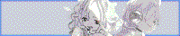
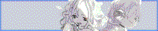

リンク集 / LINKS
相互リンクしているサイト / mutual_links

いつもお世話になっている蝉暮せせせさんのホームページです。
蝉暮せせせさんはhappyender girl/ex. happyender girlという音楽サークルで活動していて、おすすめです。また、misskeyサーバー「tanoshii.site」の運営もしています。
一時サイト改修で相互リンクではなくなりましたが、現在また相互リンクとなっています。ありがとうございます。
蝉暮せせせさんとはもう8年の付き合いになります。正直に言えば、最初はこれほど関係が続くとは思っていませんでした。運命とは数奇なものですね。
わたしはンダガ（happyender girlおよびex. happyender girlのことを、わたしは勝手に「ンダガ」と呼んでいます）の活動に一部関わらせていただいております。ぜひ聴いてみてくださいね。

こんこんたんぬもろてさんのホームページです。
こんこんたんぬもろてさんはmisskeyやpleromaサーバーなどを運営している人で、私がpon.icuをはじめる前にこんこんたんぬもろてさんの運営するmisskeyサーバー「msk.ilnk.info」にアカウントを作成し活動していたこともあって相互リンクとなりました。
msk.ilnk.infoには私の分散SNS関連年表の広告を掲載していただいているので頭が上がりません。
たんぬさんは旧共産圏の国が好きだったり、鄧麗君（テレサ・テン）が好きだったりと興味深い趣味をお持ちのようで、おもしろい方だと思っています。いろいろな話を聞いてみたいものです。

分散SNSユーザーである人生たのシンフォニーさんのウェブサイトです。
分散SNS上で相互フォローだったこと、サイトの作成者がこんこんたんぬもろてさんだったことから相互リンクとなりました。
「雑談みんはや」の運営だそうですが、不肖ながら私は「雑談みんはや」をやったことがありません。
人たのさん（わたしは略称として「人たのさん」と呼んでいます）はSNSでときどきリプライをくれて、そのリプライのタイミングが不思議なのでとてもおもしろい人だと思っています。かまってくれてありがとうございます。

1990年代から2000年代にかけての日本語圏のインターネット文化・歴史をまとめているSakurabaさんのページです。
インターネット文化の歴史が好きで勝手にリンクを貼っていたら、こちらのリンクを貼っていただきました。ばるぼら『教科書には載らない日本のインターネットの歴史教科書』とは違った角度でテキストサイトや個人サイトやflashなどの歴史をまとめていておすすめです。
わたしが作っている分散SNS関連年表の精神は、佐倉葉さんの活動に大きな啓発を受けている部分があります。自分自身で調べたいという思いから年表の参考として直接参照してはいませんが、これは偉大な先達として尊敬しているからです。あと、直接参考にしはじめると全部パクっちゃいそうなので。軽んじているわけでは決してありません。
余談ですが、佐倉葉ウェブ文化研究室は、私が個人サイトをやりたいなーと思ったきっかけの一つである「VIPPERでテキストサイトブームをまた引き起こそうぜｗｗｗｗｗｗｗｗ」についてもまとめていて、私がジュエルペットファンとしてtwitterをやっていたときに相互フォローだったデココさんのページ「シロデココ」とも相互リンクだったので世界は狭いような気がしてしまいます。

イラストを描いているてく野さんの個人サイトです。
私がてく野さんのオリジナルキャラクター「谷口ちゃん」のファンアートを勝手に描いたところ、てく野さんは私のオリジナルキャラクターを描いてくださったのでうれしかったです。
以前は押しかけ一方通行リンクだったのですが、めでたく正式に相互リンクと相成りました。
てく野さんと私はWEBラジオ「他人事ラジオ」をやっています。ぜひ聞いてね。
てく野さんはオリジナルキャラクターをたくさん描いていて、かわいいのでおすすめです。

イラストや漫画を描いているぴぇるそんさんの個人サイトです。
以前からtwitterで相互フォローであり、サイトで私に言及していただいていました。
私が管理するmisskeyサーバー、"pon.icu"にも登録してくださいました。ありがとうございます。
漫画がいい質感でおすすめです。
実はわたしがtumblrにアップした2019年11月03日のイラストは、ぴぇるそんさんの漫画のキャラクターであり、ファンアートです。

パラキヤさんのドット絵やらくがきを公開しているサイトです。
未成年者のアクセスを禁止しているようなので未成年者はアクセスしないでください。
ビットマップフォントを使用しているところに親近感が湧きます。
2024/05/12 相互リンクしていただきました！ありがとうございやす！
アニメ視聴の感想や聖地巡礼の紀行文をアップしているLLxyoのサイトです。
LLxyoは「yuinoid」の間接的な名付け親なので「師匠」と呼ぶことにしています。
聖地巡礼してる人ってすごい。わたしは出不精なので活動的なひとは尊敬しています。
2024/05/18 相互リンクしていただきました！アジャジャース！

イラストを描いているyotsuさんのページです。
かっこかわいい絵が多くてすごいいい！実はyotsuさんのyoutubeチャンネルは昔から知っていて、リンクしていただいてからおんなじ人か、と気づいてびっくりしました。
2024/06/23 相互リンクしていただきました！ありがチャー！
mistodon.cloud管理人であるこすふぃーさんが作成した「クラウド女学院」のホームページです。
こすふぃーさんはクラウド女学院の2年生で、わたしの同窓生（？）です。
心から、お慕い申しております。
2024/07/13 相互リンクしていただきました。ありがとうございます。
なかやばしさんのページです。
筑波がすきな人らしい？
分散SNS関連年表をほめてくれたのでとてもうれしいです！図書館情報学に興味があるのですごいなと思っています。
サイトの「planet eniehack」ページがすごいなと思う。こういうの作りたい。
2024/07/15 13日にリンクしていただいておりました。㌧ｸｽ
sushi.ski管理人であるくちばしさんのページです。
twitchで配信中にneocitiesの話題を出したらその場で個人サイトを作ってくれました。
サーバーの管理人ってすごいと思う。sushi.skiは特にユーザー数もあるし、管理が大変だと思う。わたしは個人サーバーをやっていたことがあるけど、壊してやめてしまったので、特にサーバー管理の大変さがわかります。つまり、尊敬しています。
2024/09/27 相互リンクになってくださいました。ありがとうございます。
sushi.skiのモデレーターになりたい。

日本に住んでいるらしいmisononoaさんのウェブサイトです。
シンプルなデザインでかわいい感じなのがすきです。
ビットマップフォントを使用しているので親近感があります。
misononoaさんはvaporwaveとかネット音楽シーンがすきっぽいんですが、結構趣味が近い感じ？で共感することがあります。あとXで時々アップしてる写真がいい。
2024/10/12 相互リンクになりました！ありがとうございます。

かんたん宛名印刷さんのホームページです。
fediverseで知った方で、分散SNS関連年表を褒めてくれたのでうれしかったです。
なんかハイテクな感じのページでかっこいいなと思います。あとドメイン名が短くてかっこいい。
2024/10/18 相互リンクになりました！ありがとうございます！

Ashleyさんのウェブサイトです。
知らない間にリンクを貼ってくれてた！結構前からリンクを貼ってくれてたっぽい！
気づくの遅れてごめん。
気づいたらサイト改修に伴いリンクが外されていました。残念。

Linkyさんのウェブサイトです。
なんか知らない間にリンクを貼ってくれてた！2022年からリンクしてくれてたっぽい。
気づくの遅れてごめん。
アニメを制作しているtehhemさんのウェブサイトです。
イラストとかアニメーションをみることができます。
気づくのが遅れてしまいましたが、2025年03月頃にリンクしていただいていたようです。ありがとうございます！
アニメが好きなのでうれしいです。あとリンク集の並びが畏れ多い......。

ネオ日本語ウェブリング主宰のちょきさんのサイトです。
日英それぞれコンテンツを用意していて、カービィ二次創作やイラスト、ブログなどのほか、ゲゲゲの鬼太郎ファイサイトも運営しており、見どころが多いです。
広げていきたい日本語neocities界隈の輪。よろしくお願いします。

日本語圏neocitiesユーザーのサイトの中でも異彩を放つみかんさんのサイト「ねおたうん」です。
トップページの圧がすごいですが、歴史的地名についてのコーナーや雑記ページ、辻井喬入門ページなど堅実？な内容が多くておもしろいです。
辻井喬の小説は読んだことないですが、辻井喬/堤清二については興味があり、西武/セゾングループ/セゾン文化についての本をいくつか読んだことがあるので興味深いです。
広げていきたい日本語neocities界隈の輪。よろしくお願いします。
2025/08/15 リンクしていただきました。ありがとうございます！

JSさんのウェブサイトです。トップページを飾るイラストがかわいいです。
アニメーションを作成しているようで、作成した動画がたくさん載っていてすごいです。
また、平沢進さんが好きなようで、サイトのあちこちから馬の骨度が高さを感じます。私も平沢進やP-MODELが好きなのでいいなと思います。
2025/08/15 リンクしていただきました。ありがとうございます！

caramelpuddinzさんのサイトです。
ピンク色で可愛くていいなと思います。cool sitesのところにこのサイトのバナーを貼ってくれていました。cinnamoroll pixelsのページがかわいくていいですね。
2025/08/18 リンク追加しました。ありがとうございます。

テキストサイト文化の雰囲気を感じるげをさんのサイト、『あごわーるど』です。
"Web1.0の復権"が目標らしく、力強いと思いました。
文章が豊富で見ていて飽きないサイトなのですが、個人的には、げをさんのドット絵とかchiptuneアレンジもできるその多才なところに嫉妬してしまいます。
2025/08/19 リンクしていただきました。ありがとうございます！

さくしゃさんのサイトです。
サイト名はさくしゃさんの個人サークル「ジユヲタプロジェクト」に由来しているそうで、「ジユヲタ」とは「自由なオタク」の略称とのこと。自由なオタク！かっこいい！
サイトはイラストがまとまっておりかわいいイラストをみることができます。
さくしゃさんはfediverseの住人で、蟹のカスタム絵文字も作ってて、おすすめです。このサイト自体はneo日本語webringで知ったんだけど、相互リンクのくちばしさんがさくしゃさんの作成したカスタム絵文字を知っていて、驚いていました。妙な巡り合わせ感。
2025/08/23 リンクしていただきました。ありがとうございます！
さくしゃさんの連載中の漫画「カフカと不可逆。」を最新話（7話）まで読んだのですが、続きが気になっています。

gabrielさんのサイトです。
どういう経緯で知り合ったのか覚えてないんですが、gabrielさんとは2020年くらいにtwitterでフォローしてからというもの、時々ネットで見かけて勝手にシンパシーを抱いていました。ウェブサイトを定期的に大きく変えていて、実はそのたびに見て変化を楽しんでいます。
最初に知ったときはhttps://gabriel1.frってドメイン名で、https://gabriel.df2.euに変わって、現在のドメインになったんじゃなかったかな。2025年現在のサイトはシンプルですが、こういうのもかっこいい。なにか機能をオマージュできないかなと思って毎度いろいろみています。
twitterのアカウントよりBlueskyのほうがアクティブみたいで、今年09月末から京大に1年間交換留学するらしい！行動力がすごい。あと日本語上手ですごいと思う。きらら系が好きなのとか、なんか共感しちゃう。
2025/09/12 リンクしました。ありがとうございます！

mastodon.cloudおよびmistodon.cloudユーザーのIamnotHayato / ᓚᘏᗢさんのサイトです。
わたしはᓚᘏᗢ名義でmastodon.cloudにいた印象が強いです。
サイトはいろいろな便利ツールがありおもしろいです。トップページの最終更新日はそうではないですが、時々皇紀表記があってすごい。
2025/09/05 リンクしていただきました。ありがとうございます！

dekamofuchanさんのサイトです。
ケモくてかっこいいイラストをたくさん載せていてかっこいいです。
イラスト集の同人誌を作ってイベントに参加しているのがすごい。いつか同人誌とか作ってみたいなあって思う。
解析ツールを見てみてリンクしていただいていることを知りました。気づいたときにはビビってしまいましたが、とても光栄なことです。2025年06月頃からリンクを掲載してくれていたっぽい。気づくの遅れてごめん！
2025/09/29 リンクを掲載しました。ありがとうございます！
お気に入りなサイトへのリンク / favorite_links

misskeyでFF関係にあるSyoBoNさんのサイトです。
2025年09月23日にSyoBoNさんがmisskeyで相互リンクを呼びかけていたため、リンクを掲載しました。
SyoBoN's Homeでは技術系の記事が多数掲載されているほか、SyoBoNさんが制作したソフトウェアやwebサービスのリンクが掲載されています。
SyoBoNさんとは正直にいえばSNS上であまり絡み（絡みって表現ちょっと下品だよね）がないのですが、実は個人サイトの相互リンクを以前から狙っていました。しかし、自分から声をかける勇気がなかったためずっと狙ったままでした。
本人がsns上で相互リンクを呼びかけていたため、今回掲載することとしました。相互リンクを呼びかけるのは大事だなと自分で思った。
misskeyでFF関係にあるt_wさんのサイトです。
デライトという知識管理サービスの投稿（「輪郭」と呼ぶ）を転載したサイトです。
t_wさんはmisskeyでたびたびリアクションをつけてくださるので、いつもうれしいです。このサイトではオーソドックスな日記のほかに専門的な内容が書かれることもあって、とても面白いです。
t_wさんの投稿でデライトを知って、デライトというウェブサービスに興味を持ったのですが、scrapbox（現cosence）やobsidianも使いこなせないのに、と思ってなかなか手が出せません。
misskeyでFF関係にあるtrotsukiさんのnoteのプロフィールページです。
trotsukiこと魔法少女トロピカル🔑ツブヤキさんは、上記のせせせさんと同じくマストドンブームから知り合いで、いつもmisskeyで投稿を見ています。「〇〇へ」という形式のハッシュタグでフォロワーに向けてイラストなどのURLを貼っておられ、わたしはいつもこっそり見て楽しんでいます。
trotsukiさんはゲームに詳しいこともあって、noteの日記ではゲームについての記事が多いです。日記はほぼ毎日更新されているのですが、ゲームも日記も苦手な自分からすると、とてもすごいと感じます。尊敬しています。
あと、trotsukiさんはscrapbox（現cosence）プロジェクト「屋台」を主宰されており、以前わたしもそこに参加したのですが、三日坊主ですぐに参加しなくなってしまいました。心残りで悔しいです。

ほそかわさんのサイトです。日土それぞれの言語に対応しており、キャラがかわいいです。
サイトの日本語フォントがワープロ明朝を使っているんですが、私もワープロ明朝が好きで、動画のキャプションなどですぐに使ってしまうのでなんだかうれしいです。
ともかくめがねのお姉さんみたいなキャラがかわいい。
あなたとJAVA,
今すぐダウンロー
ド
無料Javaのダ
イラストやグラフィックを載せているcosgasoさんのウェブサイトです。
相互リンクを募集するGoogle formsを投稿していたのでこのサイトのリンクを送りました。昔のflashを使ったかっこいいサイトっぽくてかっこいいです。
有限会社よつばスタジオのホームページです。
あずまきよきこが好きで、『あずまんが大王』が大好きなので、おすすめです。また、代表取締役を務める里見英樹のデザインワークが大好きです。
作家、伊藤計劃の2007年頃まで更新されていた個人サイトspooktaleへのリンク（アーカイブ）です。伊藤計劃のネット上での活動に関しては千倉歩氏による「伊藤計劃関連サイトまとめ（随時追加予定）」がおすすめです。
また、KOJIMANIAX内のMGS2について書かれたテキスト「制御された現実とはなにか」もおすすめです。
「卍」という作家のdrawrのページ（のアーカイブへのリンク）です。この方の描く絵がとても好きです。
my favorite artist 卍's drawr.
drawr is a social networking site with a paint bbs-like painting feature that was once run by pixiv and was discontinued in December 2019.
「くわがた」という作家のpixiv sketchへのリンクです。
この方の描く絵と映像が好きです。drawrに投稿していた絵をみることができます。
実際のdrawrページはこちら。
評論家、美術批評家のgnck氏のサイトです。
お絵かき掲示板やドット絵や低解像度イラストがすきなので、それらを扱った論文「画像の問題系 演算性の美学」や論考「ハーフトーンの筆触」などの文章がすきで、おすすめです。
映像作家、橋本麦氏のウェブサイトです。
group_inou「EYE」のMVといった映像作品も好きですが、Writingsページで公開している文章やスライド、ツールやプログラミング環境の開発から垣間見える制作態度がすきです。
Waste Free®(Digital Pollution Suite for Smart Phone Device)
james ferraroのアートプロジェクト、FUKU-TONE®のウェブサイトです。"human story 3"、"four pieces for mirai"といったjames ferraroの作品が好きです。FUKU-TONE®では着信音が無料でもらえるのでおすすめです。
the consumer aesthetics research institute、略称CARIのサイトです。"aesthetic"を単位として、70年代以降のデザイン史上の様式についてディスカッション、編纂するdiscord上のオンラインコミュニティです。勉強になっておすすめです。
RVという方のJavascript/DHTMLエフェクトをコピペ可能な形で配布しているページです。キラキラマウスエフェクトはここからコピペしました。ありがとうございました。

マスコットキャラクターがかわいいneoratzさんのneocitiesサイトです。
登録しているサービス / registered_services

このサイトのバナー / my_banner
このサイトはリンクフリーです。
トップページは https://yuinoid.neocities.org/ ですが、どのページにリンクしていただいても構いません。
このサイトは相互リンクを募集しています。気に入っていただけたら、ぜひ相互リンクしましょう！
連絡はmisskey（fediverse）またはtwitter（現X）までお気軽にどうぞ。
Feel free to link to this site.
The top page is https://yuinoid.neocities.org/, but you can link to any page.
We welcome reciprocal links. If you like this site, feel free to exchange links!
Please feel free to contact me via misskey (fediverse) or twitter(X).
200*40px buttons
 

88*31px buttons